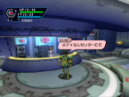
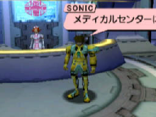

以下の手順でプレイ中の画面を
メモリーカードにセーブすることができます。
１，
ゲームプレイに関係のないコントローラと、何も入っていない空のメモリーカードを用意します。
２，
そのコントローラを『コントロールポートＤ』にセットします。
３，
そのＤポートにセットしたコントローラの『拡張ソケット２』（下のソケット）に、何もデータの入っていない空のメモリーカードをセットします。
４，
コントローラ（Ｄポート）のＡボタンもしくはＸボタンを押しながら、スタートボタンを押します。この時Ａボタンを押すか、Ｘボタンを押すかによって、画面のどの部分を撮影するのかが、下の例のように少し異なります。
・『全画面撮影』
Aボタンを押しながらスタートボタン
[例]

・『中心部分を拡大撮影』
Xボタンを押しながらスタートボタン
[例]

５，
画面が真っ暗になります。（約１５秒くらい）
画面左上にカウントダウンの数字があらわれます。この間、ゲーム画面をセットしたメモリーカードにセーブしています。
セットしたメモリーカードに空きブロックがなかった場合は何も起こりません。
６，
カウントダウンの数字が０になり、真っ暗な画面が元に戻ると『セーブ完了』です。通常のゲームに戻ることができます。
これでDポートにセットしたメモリーカードに、
画像が保存されているはずです。
さっそくビジュアル掲示板にアップロードして、中の画像を見てみましょう！（撮った画像の中身はビジュアル掲示板にアップロードすることでしか見ることはできません。）
「PSO・ビジュアル掲示板」はこちらから！
上のバナーをクリックして下さい。
Produced by ISAO Corp.
|
|